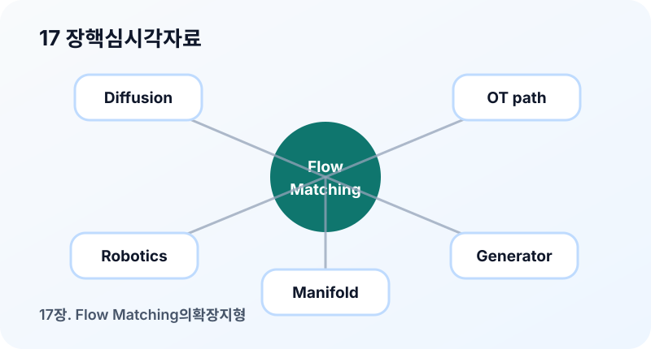

17장. Flow Matching의 확장 지형¶
이 장의 질문¶
Flow Matching을 이미지 생성의 한 방법으로만 이해하면 시야가 좁아진다. 실제로 이 아이디어는 연속 데이터, 이산 데이터, manifold, multimodal generation, optimal transport, 과학 데이터 생성 등 여러 방향으로 확장되고 있다. 그렇다면 기본 개념을 배운 독자는 이후 확장 주제를 어떻게 따라가야 할까?
이 장은 책의 본문을 마무리하며 Flow Matching의 넓은 지형을 정리한다. 모든 분야를 자세히 설명하기보다, 어떤 질문이 새 연구 주제를 만드는지 보여 주는 것이 목적이다.
연속 공간을 넘어가기¶
지금까지 우리는 \(x\in\mathbb{R}^d\)인 연속 공간을 주로 다뤘다. 이미지도 픽셀 값을 연속값처럼 취급했다. 하지만 많은 데이터는 본질적으로 이산적이다.
예를 들어 다음 데이터가 있다.
- 텍스트 token
- 그래프 구조
- categorical sequence
- discrete action
이산 데이터에서는 \(x_t\)를 단순히 연속 공간의 점처럼 보간하기 어렵다. 따라서 Flow Matching의 아이디어를 적용하려면 상태 공간, 경로, velocity의 의미를 다시 정의해야 한다.
핵심 질문은 다음이다.
이 질문은 discrete flow, categorical diffusion, jump process 같은 주제와 연결된다.
최근 자료에서는 이 흐름을 Generator Matching이라는 더 넓은 관점으로 설명하기도 한다. 여기서 generator는 이미지를 만드는 neural network라는 뜻이 아니라, Markov process의 시간 변화 법칙을 뜻한다. 연속적인 flow에서는 generator가 velocity field이고, diffusion에서는 drift와 noise 항이 generator의 역할을 하며, 이산 상태에서는 transition rate가 그 역할을 한다.
이 관점에서 보면 Flow Matching은 단지 “velocity를 예측하는 이미지 생성법”이 아니다. probability path를 먼저 정하고, 그 path를 실제로 구현하는 generator를 학습하는 틀이다. 그래서 continuous flow, stochastic diffusion, jump process, discrete CTMC(Continuous-Time Markov Chain)를 같은 지도 위에 놓을 수 있다.
Manifold와 기하 구조¶
어떤 데이터는 유클리드 공간 전체가 아니라 특정 manifold 위에 놓여 있다. 예를 들어 회전, 방향, 구면 위의 점, 분자 구조의 기하 등이 그렇다.
이 경우 단순한 직선 보간은 manifold를 벗어날 수 있다. 경로와 velocity는 manifold의 기하를 존중해야 한다.
예를 들어 구면 위의 데이터라면 중간 경로도 구면 위에 있어야 한다. 속도는 접공간의 벡터로 해석해야 한다.
여기서 \(T_x\mathcal{M}\)은 점 \(x\)에서의 tangent space다. 이 관점은 수학적으로 더 어렵지만, 데이터의 구조를 보존하는 생성 모델을 만들기 위해 중요하다.
Multimodal generation¶
현대 생성 모델은 이미지 하나만 다루지 않는다. 텍스트, 이미지, 오디오, 비디오, 3D 구조가 서로 조건이 되거나 함께 생성된다. Flow Matching도 이런 multimodal setting으로 확장될 수 있다.
조건부 모델은 다음처럼 쓸 수 있다.
여기서 \(c\)는 다른 modality의 표현이다. 예를 들어 text-to-image에서는 \(c\)가 텍스트 임베딩이고, image-to-audio에서는 \(c\)가 이미지 feature일 수 있다.
multimodal setting에서 어려운 점은 조건 정보가 충분히 강하면서도 샘플 다양성을 해치지 않도록 균형을 잡는 것이다. guidance, attention 구조, 데이터 정렬 품질이 모두 중요해진다.
과학 데이터와 물리 제약¶
Flow Matching은 과학 데이터 생성에도 관심을 받는다. 분자 구조, 단백질, 물리 시뮬레이션, 기후 데이터처럼 데이터가 특정 제약을 따라야 하는 경우가 많기 때문이다.
이때 중요한 질문은 다음이다.
- 생성 샘플이 물리 법칙이나 보존량을 만족하는가?
- 대칭성 또는 equivariance를 모델에 반영했는가?
- 경로가 의미 없는 중간 상태를 지나지 않는가?
- 조건부 생성이 실험 제약과 맞는가?
예를 들어 분자 구조에서는 회전과 이동에 대한 대칭성이 중요하다. 모델이 이런 구조를 무시하면 데이터는 그럴듯해 보여도 물리적으로 말이 되지 않을 수 있다.
데이터와 경로의 공동 설계¶
Flow Matching을 깊게 공부할수록 경로가 단순한 수학적 선택이 아니라 데이터 구조와 함께 설계되어야 한다는 점이 보인다. 이미지, 텍스트, 분자, 그래프는 서로 다른 공간에 있고, 좋은 경로의 의미도 다르다.
따라서 확장 연구를 읽을 때는 다음 질문을 던져야 한다.
- 데이터 공간은 무엇인가?
- 그 공간에서 자연스러운 중간 상태는 무엇인가?
- velocity 또는 transition은 어떻게 정의되는가?
- 학습 target을 샘플 단위로 계산할 수 있는가?
- sampling이 안정적인가?
- 생성 결과가 도메인 제약을 만족하는가?
이 질문들은 Flow Matching을 단순 알고리즘이 아니라 생성 모델 설계 언어로 보게 해 준다.
이 책 이후의 학습 순서¶
이 책을 마친 뒤에는 다음 순서로 공부하면 좋다.
- 2차원 toy implementation을 직접 완성한다.
- 작은 이미지 데이터셋에서 Flow Matching을 학습한다.
- diffusion의 probability flow ODE(Ordinary Differential Equation, 상미분방정식)와 비교한다.
- path parameterization을 바꾸며 solver step을 비교한다.
- Conditional generation과 guidance를 실험한다.
- 관심 도메인에 맞는 확장 논문을 읽는다.
중요한 것은 논문을 읽기 전에 작은 실험을 갖고 있는 것이다. 실험 코드가 있으면 새로운 논문의 path나 loss를 직접 바꿔 넣어 볼 수 있고, 수식이 훨씬 구체적으로 이해된다.
확장 주제를 읽을 때의 위험¶
확장 논문은 매력적이지만, 초심자에게는 두 가지 위험이 있다.
첫째, 용어가 새로워 보인다는 이유로 기본 구조를 놓칠 수 있다. discrete flow, manifold flow, multimodal flow처럼 이름이 달라도 결국 확인해야 할 것은 경로, target, sampler다.
둘째, 도메인 지식과 생성 모델 지식이 한꺼번에 필요하다. 예를 들어 분자 생성 논문은 Flow Matching뿐 아니라 화학적 제약, 대칭성, 평가 지표를 함께 알아야 한다. 이때 생성 모델 수식만 따라가면 논문의 핵심 기여를 오해할 수 있다.
따라서 확장 주제를 읽을 때는 다음 순서를 권한다.
- 먼저 데이터 공간과 제약을 파악한다.
- 그 공간에서 경로가 어떻게 정의되는지 본다.
- target velocity 또는 transition target을 확인한다.
- sampling 절차가 기본 ODE와 어떻게 달라졌는지 본다.
- 평가 지표가 도메인 목표를 제대로 반영하는지 확인한다.
이 순서를 따르면 익숙하지 않은 분야의 논문도 Flow Matching의 기본 언어로 다시 정리할 수 있다.
책 전체의 연결 관계¶
이 책은 0장에서 생성 모델의 문제의식으로 시작해, 1-5장에서 확률과 동역학의 기본 언어를 준비했다. 6-9장에서는 Flow Matching의 정의와 diffusion과의 관계를 정리했고, 10-14장에서는 구현과 sampling을 다뤘다. 15-17장은 이 지식을 논문 독해와 확장 주제로 연결한다.
따라서 마지막 장에서 중요한 것은 새로운 키워드를 많이 외우는 것이 아니다. 다음 세 문장을 스스로 설명할 수 있으면 책의 목적은 달성된다.
- 생성은 분포를 이동시키는 문제로 볼 수 있다.
- Flow Matching은 그 이동을 만드는 velocity field를 학습한다.
- 경로와 solver 선택은 학습 난이도와 생성 효율을 함께 결정한다.
이 세 문장을 기준으로 삼으면 diffusion, rectified flow, OT(Optimal Transport, 최적 수송), conditional generation, manifold extension을 하나의 지도 위에 배치할 수 있다.
독자가 가져가야 할 큰 그림¶
Flow Matching은 다음 세 가지 관점을 연결한다.
첫째, 확률 분포의 이동이다. 생성 모델은 단순한 분포를 데이터 분포로 옮기는 문제다.
둘째, 속도장의 학습이다. 모델은 샘플의 다음 상태가 아니라 현재 위치에서의 이동 방향을 배운다.
셋째, 경로 설계다. 어떤 경로를 만들 것인가는 학습 난이도와 sampling 효율을 좌우한다.
이 세 가지를 기억하면 새로운 논문을 만나도 핵심 구조를 찾을 수 있다.
시각 자료¶

- 확장 지형 지도: Flow Matching 중심에서 discrete data, manifold, multimodal, science, OT, rectified flow로 뻗는 지도.
- 데이터 공간별 경로 그림: 유클리드 공간의 직선, 구면 위의 곡선, 이산 상태 전이를 나란히 보여 준다.
- 학습 이후 로드맵: toy example에서 이미지, 조건부 생성, 논문 재현, 도메인 확장으로 이어지는 단계 그림.
요약¶
- Flow Matching은 이미지 생성뿐 아니라 이산 데이터, manifold, multimodal generation, 과학 데이터 생성으로 확장될 수 있다.
- 데이터 공간이 달라지면 경로와 velocity의 의미도 다시 정의해야 한다.
- Manifold 데이터에서는 경로가 공간의 기하 구조를 존중해야 하며 velocity는 tangent space에서 해석될 수 있다.
- Multimodal과 조건부 생성에서는 조건 정보, guidance, 데이터 정렬 품질이 중요하다.
- 이 책 이후에는 작은 구현을 기반으로 path, solver, guidance, 도메인 확장을 하나씩 실험하며 논문을 읽는 것이 좋다.